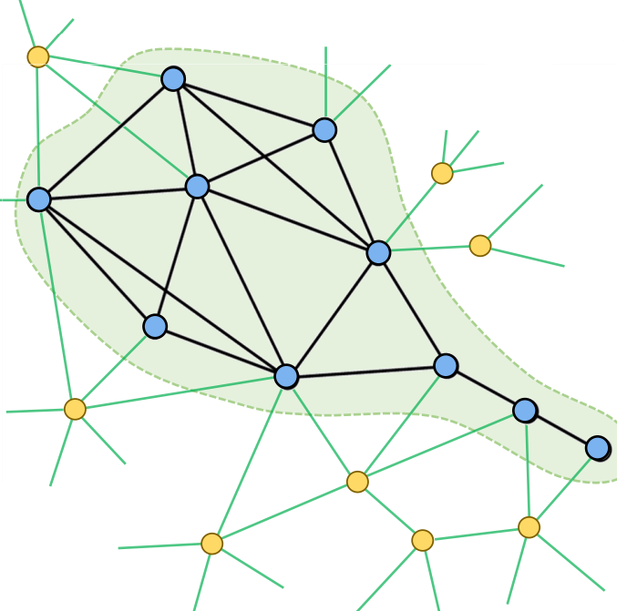
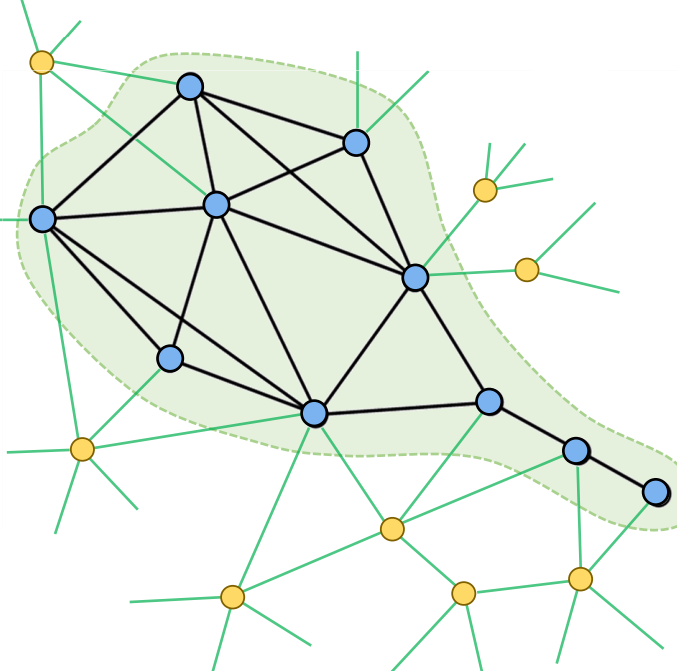

Is the communication between students a social network?
Is a supply chain a social network?
Is the Tokyo train line a social network?
Is our brain a social network?
Can words be part of a social network?
1.1.1 Definition
Networks are a way of thinking about social systems that focus our attention on the relationships among the entities that make up the system, which we call actors or nodes. These are the focus of Network Science.
The nodes in a network can be almost anything, although when we talk about social networks we normally expect the nodes to be active agents rather than, say, inanimate objects. Most often, nodes are individuals, but can also be collectivities. Social Network Analysis focuses on humans and how their actions and mechanisms impact the system of interest.
In a social network, we can find:
Nodes or vertices, entities that are linked together and are studied;
Ties or Edges, which link nodes with one another;
Boundary, a delimited group where some nodes are part of it and some others don’t. It’s like the criteria of choosing a subset of data inside a much bigger group of nodes and links.

1.1.2 Social Network Representation
A usual representation for networks is the Adjacency matrix, a square matrix that can be reciprocal (mirrored) or not (different if we swap columns and rows). Generally, self-loops do not make sense, therefore in certain situations, we can just ignore them by inserting a 0. Whenever there is a tie linking two nodes, we insert a 1.
The value inside the adjacency matrix between a couple of nodes may assume values different from 0 and 1, e.g. the weight of the tie. By adding attributes (e.g. age, gender), we could modify the network representation based on a specific attribute (e.g. colour, size, shape).
1.2 Types of networks
1.2.1 Sociocentric or complete network analysis
A complete or sociocentric network is such that we detain data about the mutual relationship of every couple of nodes inside the considered network. Normally, an ego network analysis belongs to such type of networks, where there is a central node and we’re interested in modelling all relationships entertained with that subject.
An extension to the ego network approach is to continue iterating and expanding the network, starting from a single node and iterating over its linked nodes (Snowball sampling).
1.2.2 Directed and undirected networks
Undirected networks are such that relationships are mutual and both parts know they’re linked.
Directed networks may be represented both by straight lines with two arrows or curved lines with two lines, pointing in opposite directions.
1.2.3 Multiple network relations
We could look at:
different types of links (e.g. positive and negative), differentiated by the link or node colour;
how relationships evolve among the same nodes;
1.2.4 Weighted networks
These types of networks have weights or values of the edge, where nodes or links may have different importances from each other.
1.2.5 Two-mode or Bipartite networks
In two-mode networks, there are two types of nodes, where each node is associated with the other type. It’s an undirect way to look at connections between people that may be unconscious.
The two-mode network can be projected to a one-mode network, based on their common connections to the other type node.
1.3 Levels of analysis
Group Level
We look at the entire network, not focusing on a specific node, looking at communities or how far some nodes are from each other.
Individual Level
Focusing on a single node, we look at its connections and position inside the network (e.g. centralisation, density). Most node-level network properties are aggregations of dyad-level measurements, as when we count the number of ties that a node has.
Dyadic Level
We study pairwise relations between actors and ask research questions. The dyad level is the fundamental unit of network data collection, and is the unit with the greatest frequency.
1.1 Social Network Analysis
What is a social network?
Is Instagram a social network?
Is the communication between students a social network?
Is a supply chain a social network?
Is the Tokyo train line a social network?
Is our brain a social network?
Can words be part of a social network?
1.1.1 Definition
Networks are a way of thinking about social systems that focus our attention on the relationships among the entities that make up the system, which we call actors or nodes. These are the focus of Network Science.
The nodes in a network can be almost anything, although when we talk about social networks we normally expect the nodes to be active agents rather than, say, inanimate objects. Most often, nodes are individuals, but can also be collectivities. Social Network Analysis focuses on humans and how their actions and mechanisms impact the system of interest.
In a social network, we can find:

1.1.2 Social Network Representation
A usual representation for networks is the Adjacency matrix, a square matrix that can be reciprocal (mirrored) or not (different if we swap columns and rows). Generally, self-loops do not make sense, therefore in certain situations, we can just ignore them by inserting a 0. Whenever there is a tie linking two nodes, we insert a 1.
The value inside the adjacency matrix between a couple of nodes may assume values different from 0 and 1, e.g. the weight of the tie. By adding attributes (e.g. age, gender), we could modify the network representation based on a specific attribute (e.g. colour, size, shape).